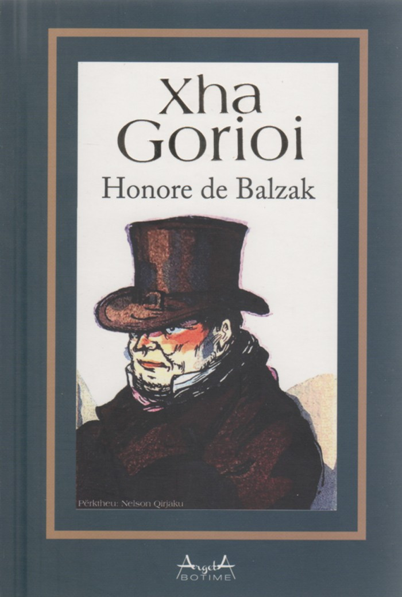

Xha Gorioi është një nga romanet më të njohura të shkrimtarit francez Honoré de Balzac. Vepra trajton sakrificat e një babai për vajzat e tij në një shoqëri të korruptuar nga pasuria dhe ambicia. Një histori prekëse që nxjerr në pah realitetin e dhimbshëm të shoqërisë pariziene të shekullit XIX.
